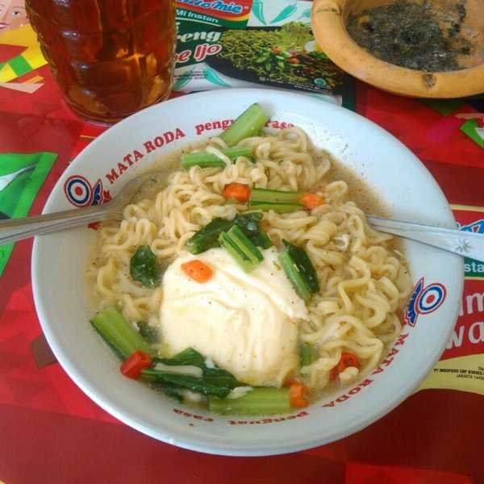

Indomie

Description
Indomie is a staple for Indonesian. From the young to the old, everybody loves them.
The low price mixed with the amazing taste makes it great to eat as a 'snack' or even a full meal
In this recipe, we will make an Indomie soup (that's broth Indomie) with the addition of a boiled egg.
Ingredients
- 1 Indomie (broth one) of your choice
- 1 Egg
- Mustard greens
- 2 pinches of fried onions
Steps
- Chop the mustard greens until you get a handful of them (or as much as you wish)
- Boil some water in a medium heat
- Put the Indomie and the mustard greens inside the boiling water
- Boil them for +-3 minutes
- Put them in a bowl, set aside
- Boil the egg +-2 minutes
- While the egg is boiling, add seasonings (included in the Indomie package) to the Indomie
- Add +-200 ml of hot water to the bowl of Indomie
- Mix well
- When the egg is finished, put it in the bowl
- Add fried onions as toppings
- Indomie is ready to serve
Go back